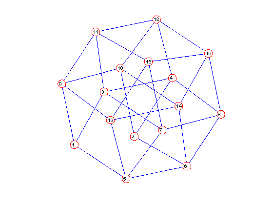

Eulerian tours
The euler_trail function finds Eulerian trails and tours in graphs.
Contents
Line graph of the Petersen graph
The Petersen graph has no Eulerian trail or tour, but its line graph does. The Eulerian trail is reported as a list of edges.
g = graph; petersen(g); h = graph; line_graph(h,g); distxy(h); clf;ndraw(h); euler_trail(h)
Optimization terminated: relative function value
changing by less than OPTIONS.TolFun.
Embedding score = 25.4114
Elapsed time is 0.378983 seconds.
ans =
1 2
2 3
3 1
1 4
4 5
5 13
13 9
9 6
6 4
4 7
7 6
6 8
8 2
2 10
10 8
8 9
9 12
12 3
3 11
11 7
7 15
15 10
10 14
14 13
13 12
12 11
11 15
15 14
14 5
5 1

4-cube minus an edge
The four dimensional cube is a 4-regular graph. Deleting one edge from this graph leaves a connected graph with exactly two vertices of odd degree. We find an Euler trail in that graph.
k = graph; cube(k,4); distxy(k); delete(k,1,2); euler_trail(k) clf;ndraw(k)
Optimization terminated: relative function value
changing by less than OPTIONS.TolFun.
Embedding score = 30.5892
Elapsed time is 1.838666 seconds.
ans =
1 3
3 4
4 2
2 6
6 5
5 1
1 9
9 10
10 12
12 4
4 8
8 6
6 14
14 13
13 5
5 7
7 3
3 11
11 9
9 13
13 15
15 7
7 8
8 16
16 12
12 11
11 15
15 16
16 14
14 10
10 2
 Release storage
free(g); free(h); free(k);